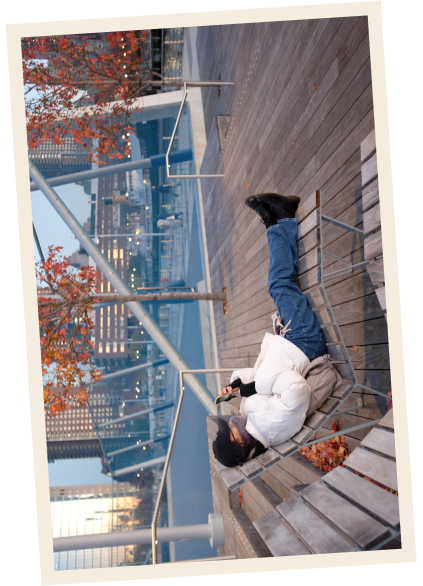

Dear Parents,
This weekend was Thanksgiving Break! My first real college “fall break” since last year we had the strike. It
was great but it went by too fast and now there’s only two weeks left in the semester and before I go home.
Dad came up on Wednesday morning since I had no classes that day. We took the train up to Central Park and saw
some floats getting prepared for the Thanksgiving Parade tomorrow. We also got to see the fall foliage which we
saw last year when he came up but it felt more vibrant this time around. We also had the Fuji camera so maybe
that made the difference. After the park we walked to see my old relocated dorm again.. yikes. But just across
the street was Mamoun’s Falafel which has $6 falafels! It was a deal but nothing too special. We then took the
train down to B&H and walked the Highline, seeing it’s new addition. Our feet were sore and it was getting
cold so we picked up burgers from 7th St Burger and that was so great. My impossible burger had their signature
texture and their fries were actually perfection. I then got to play some Animal Crossing on dad’s switch and I
set up my own island.
On Thanksgiving day, I didn’t wake up too early so we settled for watching the parade from 32nd St. Not the best
view but at least we weren’t huddles shoulder to shoulder with strangers for hours. We ate meh bagels at Bagel
Pub then checked out Wegman’s which is a fancy grocery store but actually has cheaper prices than Hawaii. Go
figure. We took the train down to Chinatown and had a tofu dessert from Fong-On before walking across the
Brooklyn Bridge (background img). We ended up in Brooklyn Heights and watched the sunset at Brooklyn Bridge
Park. I completely forgot what we ate as our Thanksgiving dinner.
On Black Friday we dared to go into Macy’s which was crazy crowded. We ate at Wafels and Dinges nearby which was
a mistake since my wafel bites turned out to be mostly ice cream/whipped cream. Yum but not a great way to start
the day. I spent the day with Tati and Wyland going to Bryant Park and some stores in K-town. I bought a huge
plate! Dad and I had Thai food from Tam Sang Kitchen (plus 7th st burger appetizer) and that was yum.
Saturday was Dad’s last day, but also the coldest. We had wanted to check out Dyker Heights but being in the
dark and cold in far Brooklyn on a weekend did not sound the most fun. We checked out Downtown Brooklyn and ate
at Brooklyn Point’s Dekalb Market Hall. We also walked pass Fort Greene Park and Pratt before heading back. It
sucks taking the train in Brooklyn since there system is not as elaborate as Manhattan. Taking the train back,
we headed to Brookfield Place and also struggled with the train system of Financial District... We ate at Bravo
Pizza for dad’s last stop in NYC 2023.